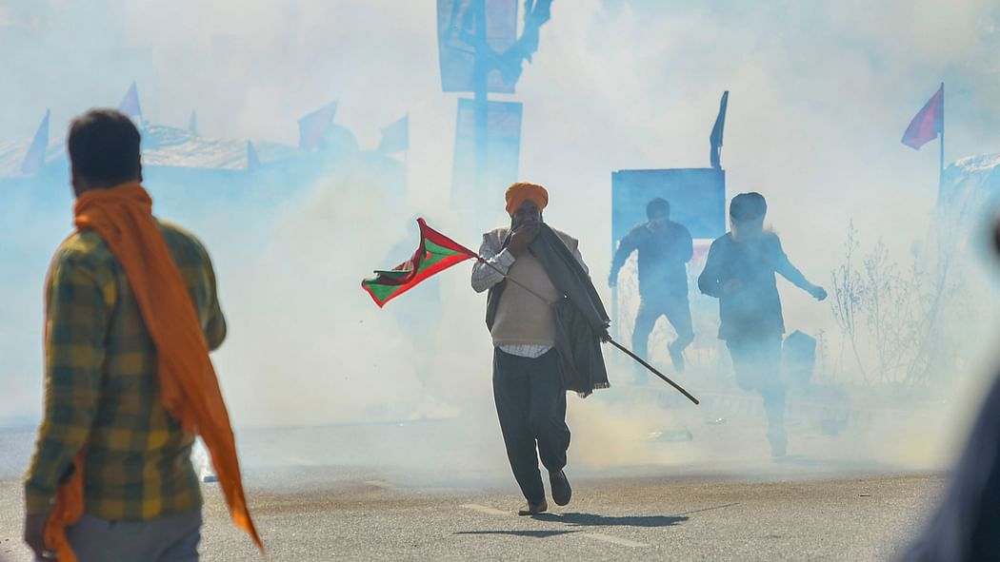
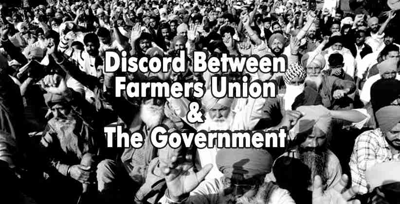

MARCH TOWARDS DELHI
Preparation For March
In order to March towards Delhi on 26 November, 2020, preparations were a made a month before the date as the Farmers' Union announced the date a month before. Farmers from all the villages were told to prpeare their tractors and trollies as temporary home with proper food supplies for about 6 months with all other basic necessisities. It was told that every village should contribute atleast two tactor trollies in the protests with total 40-50 village people in order to march towards Delhi.
The Day of 26 November
Finally, the day came which created a history around the world and popularised the protests to
the world level. Thousands of tractor trollies from Punjab, Haryana, Uttar Pradesh, Rajasthan,
Maharastra and Madhya Pradesh marched towards the Capital of India. State Government of Haryana (under
the influence of Central BJP Government) tried to suppress the crowd from moving to the capitol which
was violation of the basic fundamnetal rights of the farmers. They threw tear gas, sprayed water cannons
and tried to beat the farmers in order to stop them. However, the spirits of the farmers were high and
they had a set mindset to reach Delhi at any cost.
Breaking through all the hurdles set by the Central Government, tractors eventually reached the borders
of the Capital. When the thousands of tractors reached there, the government in fear surrendered in
front of the
protestors and invited to talk at table in order to solve the matter. However, the Farmers' Union agreed
on table talk but decided to stay at the borders of Delhi until a solution made with the government.
Here begin a series of talks with the central government.
Series of Table Talks
After the farmers reached the borders of Delhi and surrounded the Delhi, the government in fear
begin the table talks with the leaders of Farmers' Unions in order to convince the farmers. In all the
talks, government just tried to explain the leaders with benefits of the laws but the leaders stood on
their decision of repealling the laws. Although government agreed on the flaws in these laws but they
just wanted to ammend them rather than repealling them.
After 6-7 talks with the government, government decided to stop the table talks with
leaders as there was no agreement bieng made between the both. The leader however, decided to increase
the protests on greater scale in order to create more pressure on the government.
Present Scenario
In the present scenario, the faremrs are surrounding the five main borders of the Capitol for
more than 90 days in their trollies. Farmers' Unions are organising many programs in order to increase
the pressure on the government. 26 January Tractor March, Nation-wide protests on railways, boycotting
the items sold by the large corporates, protests at local areas around the country etc. are certain
steps taken by the unions along with the protests at the borders of Capitol. However, it is believed
that although the government is trying to suppress the movement by spreading fake news about the protest
but eventually, they would have to surrender in front of the faremrs as no single party or person could
rule forever in a Democracy and that is it's beauty.
So, government should recognise their responsibility towards their people and repeal these laws for
benefit of the citizen of their country. They should know that India's economy is mainly supported by
the agriculture and they should bring laws which further increase the contribution of this primary
sector as well as increase the average income of a farmer.